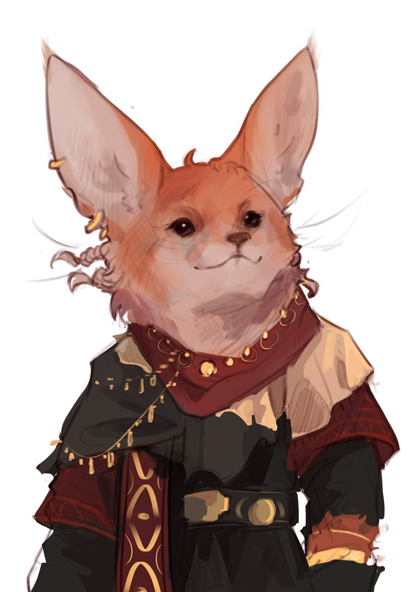

Считается, что шуалы — это наследие территорий Аль'Ваэра, когда она ещё была зелёным и процветающим местом. Они приходят с песком на лапках и смехом, что звенит звонче монет. Шуалы — дети забытых оазисов, чьи предки бежали сквозь века, когда пустыня поглощала зелень.
Их силуэты — будто мираж: низкие, гибкие, с ушами-опахалами, улавливающими шёпот ветра. Глаза-миндалины сверкают янтарём, а шерсть оттенка закатного песка украшена браслетами и бубенцами. Когда они двигаются, кажется, будто сама пустыня танцует — их хвосты с кисточками рисуют в воздухе узоры древних рун.
Весёлый и загадочный народ, вокруг которого ходит немало мифов. Предпочитают сытое благополучие в городах. Полукочевники, путешествующие таборами от города к городу. Вместо сложной работы предпочитают песни, танцы и гадание, устраивая различные развлекательные представления.
Главу табора называют Баро — его взгляд тяжелее слитка золота. Он сидит на ковре, окружённый старейшинами. Мнение Баро не обсуждается. После Баро по важности идут другие мужчины-главы семейств и старейшины. Затем — старшие женщины, на которых ложится основная забота о заработке и пропитании. Самыми бесправными являются молодые холостяки, незамужние девушки и дети.
Все спорные моменты решает шуальский суд. Никто не взывает к властям городов — законы шуалов старше стен Ма-Халлама. Самым страшным наказанием считается изгнание из табора.
Приверженцы Старой религии. Они верят, что их время не ушло. Пока пустыня помнит ритм их бубнов, шуалы остаются вечными странниками, что несут городам не товары, а отсветы забытого рая.
Шуалы разделяют несколько общих особенностей.
| Особенность | Описание |
|---|---|
| Увеличение характеристик | Значение вашей Ловкости увеличивается на 2, а значение Харизмы увеличивается на 1. |
| Возраст | Шуалы имеют такую же продолжительность жизни, что и махребы. |
| Размер | Шуалы в среднем примерно 3 фута (90 сантиметров) ростом и весят около 40 фунтов (18 килограмм). Ваш размер — Маленький. |
| Скорость | Ваша базовая скорость ходьбы составляет 25 футов. |
| Тёмное зрение | У вас есть острые кошачьи чувства. На расстоянии в 60 футов вы при тусклом освещении можете видеть так, как будто это яркое освещение, и в темноте так, как будто это тусклое освещение. В темноте вы не можете различать цвета, только оттенки серого. |
| Зрелищные прыжки | Каждый раз, когда вы совершаете прыжок в длину или высоту, вы можете бросить к8 и прибавить выпавшее число к количеству футов, которое вы можете преодолеть прыжком, даже если прыгаете с места. |
| Проворство шуалов | Вы можете проходить сквозь пространство, занятое существами, чей размер больше вашего. |
| Обаяние шуалов | Вы можете накладывать заклинание дружба с животными количество раз, равное бонусу мастерства. Начиная с 3-го уровня, вы также можете накладывать заклинание внушение с помощью этой особенности. После накладывания этого заклинания вы должны закончить продолжительный отдых, прежде чем сможете вновь наложить его таким образом. Также вы владеете заговором Фокусы. Базовой характеристикой для этих заклинаний является Харизма. |
| Языки | Вы можете говорить, читать и писать на Общем, шуальском и ещё одном языке на ваш выбор. |
{kind=link}